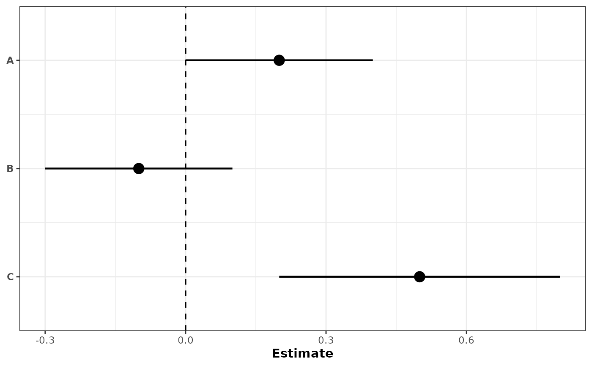
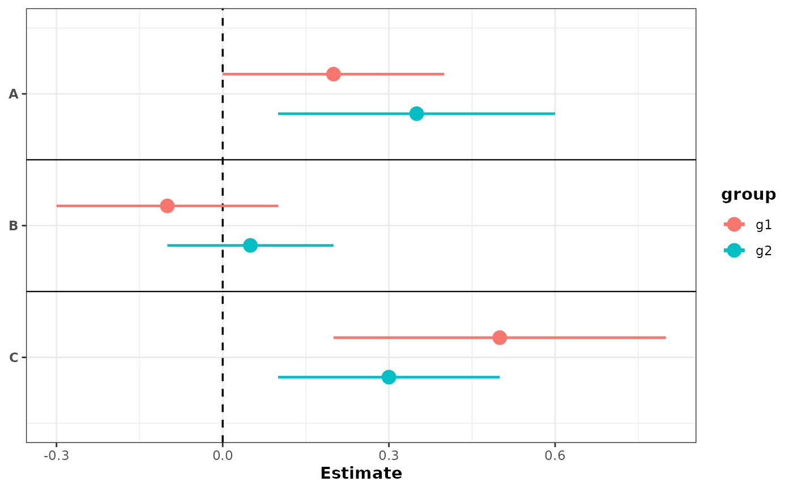
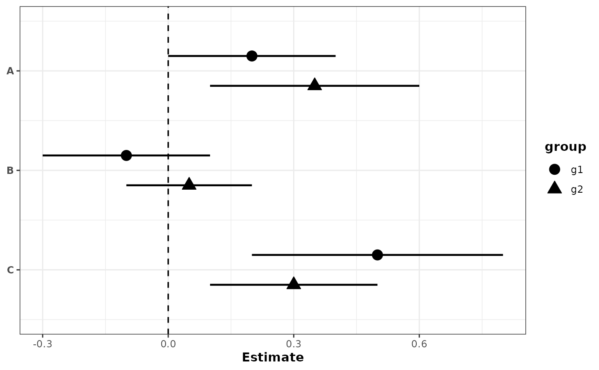
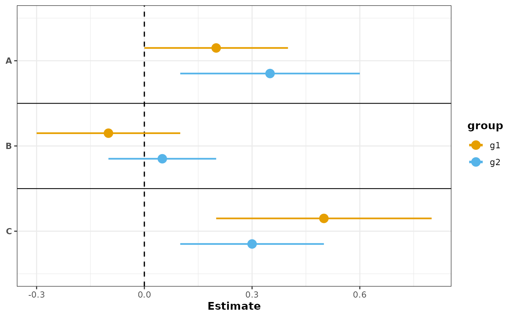
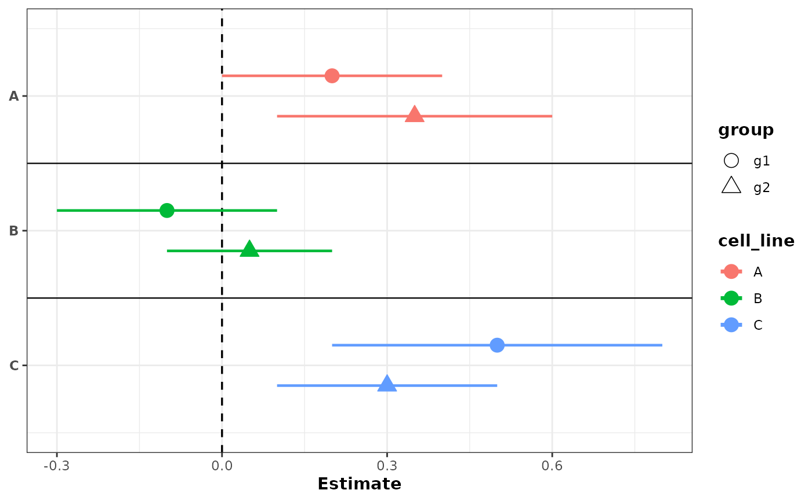
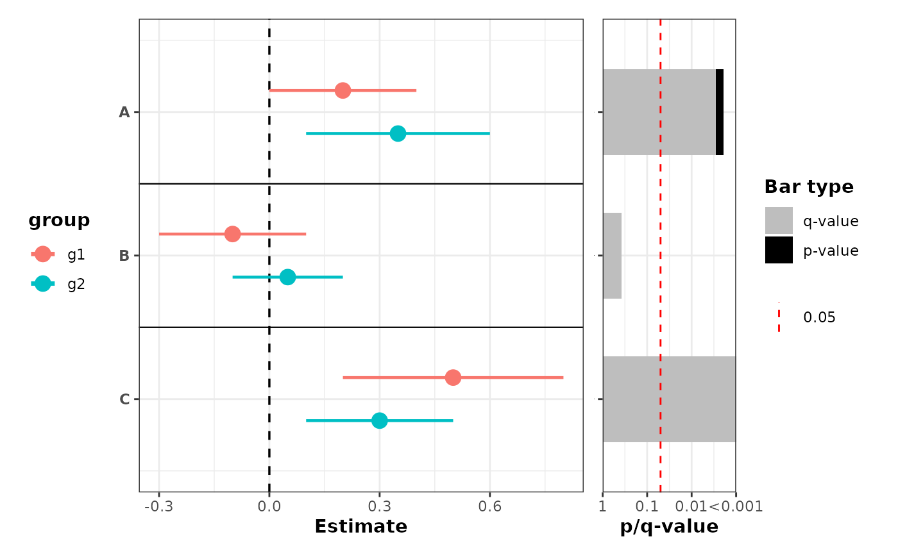
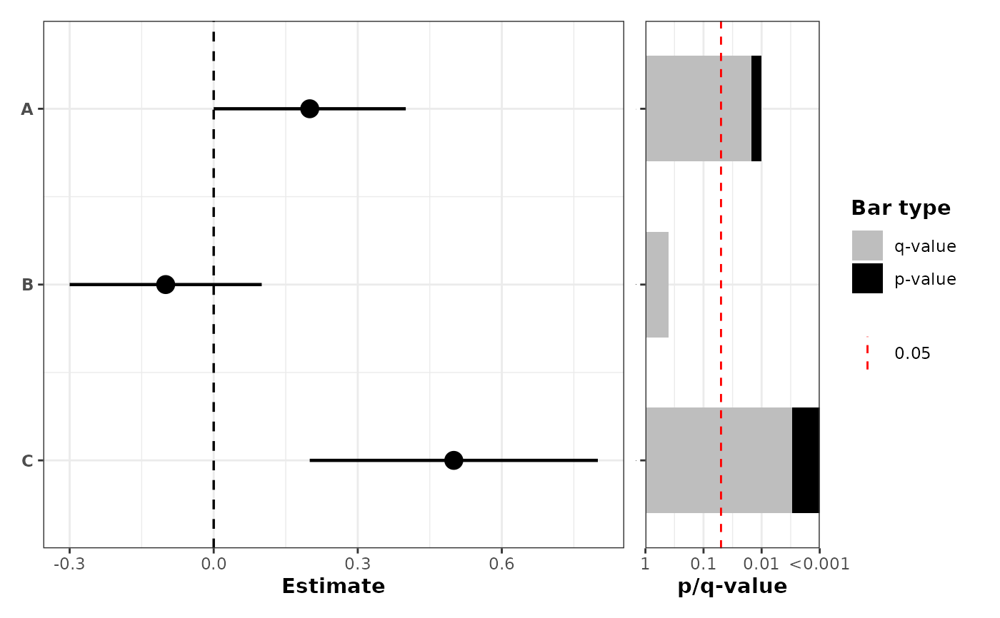
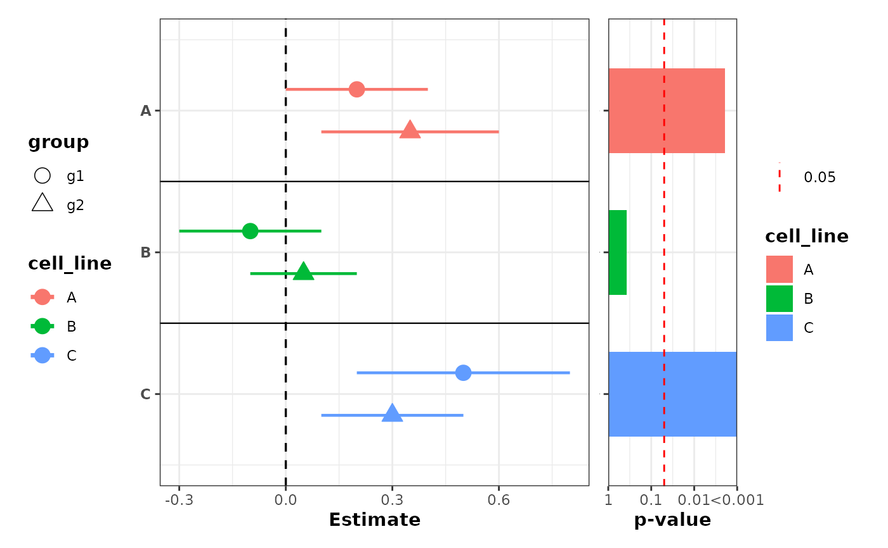

Dot-and-whisker plot of estimates with confidence intervals
Source:R/plot_confidence_intervals.R
plot_confidence_intervals.RdCreate a horizontal dot-and-whisker plot showing point estimates and confidence intervals for labeled rows. Optionally offset points and use different shapes or colors when a grouping column is supplied. Optionally append a p-value barplot to the right via patchwork.
Usage
plot_confidence_intervals(
data,
effect_size,
ci_low,
ci_high,
id,
group_col = NULL,
dodge_width = 0.3,
color_col = NULL,
color_values = NULL,
show_separators = TRUE,
shape_col = NULL,
sep_linetype = "solid",
sep_linewidth = 0.4,
sep_color = "black",
vline_xintercept = 0,
vline_linetype = "dashed",
vline_color = "black",
point_shapes = c(21, 24, 22, 25, 23),
pvalue_col = NULL,
combine_pvalue_method = c("fisher", "CMC", "MCM", "cauchy", "minp_bonferroni"),
pvalue_plot_width = 0.3,
pvalue_plot_margin = c(5.5, 12, 5.5, 0),
...
)Arguments
- data
A data.frame or tibble containing the columns referenced by
effect_size,ci_low,ci_high, andid.- effect_size
String name of the effect size/estimate column.
- ci_low
String name of the lower confidence interval column.
- ci_high
String name of the upper confidence interval column.
- id
String name of the label/row identifier column. Must be a factor; factor levels control the top-to-bottom row ordering (first level appears at the top).
- group_col
Optional string name of a factor grouping column. When provided, points are offset by group for visibility. Factor levels control the ordering and direction of the dodge offset: the first level is plotted at the top of each row.
- dodge_width
Numeric. Total vertical spread across groups. Default
0.3.- color_col
Optional string name of a column to use for coloring segments and points. When
NULL(default), no colors are applied. Common choices aregroup_colto distinguish groups oridto color by row. Must be a factor or character column.- color_values
Optional named character vector specifying custom colors for the levels in
color_col. Names should match the factor levels and values should be valid R color names or hex codes (e.g.,c(g1 = "#FF0000", g2 = "#0000FF")). IfNULL(default), ggplot2's default color scale is used. Ignored ifcolor_colisNULL.- show_separators
Logical. Whether to draw horizontal separator lines between rows when
group_colis supplied. DefaultTRUE.- shape_col
Optional string name of a column to use for point shapes. When
NULL(default), no shape encoding is applied. Can be a factor or character column; character columns are coerced to factor with sorted level ordering for stable shape assignment. Can be used independently or in combination withcolor_col.- sep_linetype
Line type for row separator lines. Default
"solid".- sep_linewidth
Line width for row separator lines. Default
0.4.- sep_color
Color for row separator lines. Default
"black".- vline_xintercept
Numeric. Position of the vertical reference line. Default
0.- vline_linetype
Line type for the vertical reference line. Default
"dashed".- vline_color
Color for the vertical reference line. Default
"black".- point_shapes
Integer vector of point shapes to use when
shape_colis specified. Must have at least as many elements as there are levels inshape_col. Defaults toc(21, 24, 22, 25, 23)(up to 5 groups). Seegraphics::points()for shape codes.- pvalue_col
Optional string name of a column in
datacontaining p-values (one per row). When supplied, aplot_pvalue_barplot()is appended to the right using patchwork. Whengroup_colis specified, p-values are combined across groups for eachidlevel using the method specified bycombine_pvalue_method. Whengroup_colisNULL, individual p-values are displayed directly. Requires the patchwork package.- combine_pvalue_method
Character; method for combining p-values when
group_colis supplied. One of: "fisher" (default), "CMC", "MCM", "cauchy", "minp_bonferroni". Seecombine_pvalues()for details. Ignored ifgroup_colisNULL.- pvalue_plot_width
Relative width of the p-value panel passed to
patchwork::wrap_plots()widths. Default0.3.- pvalue_plot_margin
Numeric vector of length 4 giving the p-value panel plot margin in points:
c(top, right, bottom, left). Defaultc(5.5, 12, 5.5, 0)which increases right margin so x-axis labels are not clipped when the panel is appended to the right.- ...
Additional arguments passed to
plot_pvalue_barplot()whenpvalue_colis supplied. Thefillparameter can be used to color the p-value bars. Whengroup_colis specified,fillmust beNULLor equal to theidcolumn name (since p-values are combined across groups).
Examples
ggplot2::theme_set(theme_bw2())
df <- data.frame(
cell_line = factor(c("A", "B", "C", "A", "B", "C"), levels = c('A', 'B', 'C')),
est = c(0.2, -0.1, 0.5, 0.35, 0.05, 0.3),
conf.low = c(0.0, -0.3, 0.2, 0.10, -0.10, 0.1),
conf.high = c(0.4, 0.1, 0.8, 0.60, 0.20, 0.5),
group = factor(c("g1", "g1", "g1", "g2", "g2", "g2"), levels = c("g1", "g2")),
pvalue = c(0.01, 0.4, 0.001, 0.02, 0.3, 0.0001)
)
# Simplest: no grouping, no color
plot_confidence_intervals(
df[1:3, ],
effect_size = "est",
ci_low = "conf.low",
ci_high = "conf.high",
id = "cell_line"
)

# With grouping: separate rows with color by default
plot_confidence_intervals(
df,
effect_size = "est",
ci_low = "conf.low",
ci_high = "conf.high",
id = "cell_line",
group_col = "group",
color_col = "group"
)

# With grouping: different shapes for groups
plot_confidence_intervals(
df,
effect_size = "est",
ci_low = "conf.low",
ci_high = "conf.high",
id = "cell_line",
group_col = "group",
shape_col = "group",
show_separators = FALSE
)

# With grouping: color by group with custom colors
plot_confidence_intervals(
df,
effect_size = "est",
ci_low = "conf.low",
ci_high = "conf.high",
id = "cell_line",
group_col = "group",
color_col = "group",
color_values = c(g1 = "#E69F00", g2 = "#56B4E9")
)
#> Scale for colour is already present.
#> Adding another scale for colour, which will replace the existing scale.

# Color by label, shapes by group
plot_confidence_intervals(
df,
effect_size = "est",
ci_low = "conf.low",
ci_high = "conf.high",
id = "cell_line",
group_col = "group",
shape_col = "group",
color_col = "cell_line"
)

# Grouping with p-value barplot using Fisher's combined p-value
plot_confidence_intervals(
df,
effect_size = "est",
ci_low = "conf.low",
ci_high = "conf.high",
id = "cell_line",
group_col = "group",
color_col = "group",
pvalue_col = "pvalue",
combine_pvalue_method = "fisher",
mlog10_transform_pvalue = TRUE
)
#> Scale for y is already present.
#> Adding another scale for y, which will replace the existing scale.

# No grouping, but with p-value barplot on the right
plot_confidence_intervals(
df[1:3, ],
effect_size = "est",
ci_low = "conf.low",
ci_high = "conf.high",
id = "cell_line",
pvalue_col = "pvalue",
mlog10_transform_pvalue = TRUE
)
#> Scale for y is already present.
#> Adding another scale for y, which will replace the existing scale.

# Color by label and shapes by group, with p-values colored by label
plot_confidence_intervals(
df,
effect_size = "est",
ci_low = "conf.low",
ci_high = "conf.high",
id = "cell_line",
group_col = "group",
shape_col = "group",
color_col = "cell_line",
pvalue_col = "pvalue",
combine_pvalue_method = "fisher",
mlog10_transform_pvalue = TRUE,
fill = "cell_line",
also_show_qvalue = FALSE
)
#> Scale for y is already present.
#> Adding another scale for y, which will replace the existing scale.
